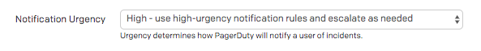
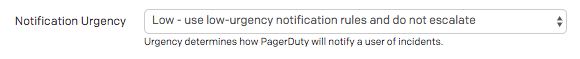
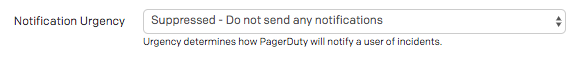

告警原则
我们根据一个简单的原则来管理如何接收警报。警报是需要人类执行某种操作的事情。其他任何事情都是通知，这是我们无法控制且无法对其采取任何行动的事情。通知是有用的，但它们不应该在任何情况下唤醒人们。
警报优先级#
高优先级警报
任何在半夜唤醒人类的事情都应该是立即需要人类采取行动的。如果不是这些事情，那么我们需要调整警报，使其不在那些时间发出。
| 优先级 | 警报 | 响应 |
|---|---|---|
| 高 | 高优先级 PagerDuty 警报 24/7/365。 | 需要立即人类行动。 |
| 中 | 高优先级 PagerDuty 警报仅在工作时间。 | 需要在24小时内采取人类行动。 |
| 低 | 低优先级 PagerDuty 警报 24/7/365。 | 需要在某个时间点采取人类行动。 |
| 通知 | 抑制的 PagerDuty 事件。 | 不需要响应。仅提供信息。 |
如果你正在设置一个新的警报/通知，考虑上面的图表来决定如何通知人们。要注意不要创建不需要立即响应的高优先级警报。
优先级示例#
"生产服务的请求失败率达到75%，自动化无法解决。"#
这将是高优先级页面，需要立即采取人类行动来解决。

"生产服务器磁盘空间正在填充，预计48小时后满。日志轮转不足以解决。"#
这将是中优先级页面，需要人类尽快采取行动，但不是立即。

"SSL证书将在一周后到期。"#
这将是低优先级页面，需要在不久的将来采取人类行动。

"部署成功。"#
这将是通知，应作为抑制事件发送。它在发生事件时提供有用的上下文，但不需要通知人类。

警报内容#
我们应该确保警报包含足够有用的上下文，以便快速识别问题和任何潜在的修复步骤。具有通用标题或描述的警报没有用，并且会造成混淆。我们有一套警报内容的指南，所有警报都应该遵循，
使标题/摘要具有描述性和简洁性。#
- 警报：出问题了。
-
prod-web-loadbalancer-af5462ce上的磁盘已满80%。
确保在正文中包含触发警报的指标。#
- 磁盘上的磁盘空间正在填充。
-
avg(last_1h):max:system.disk.in_use{env:prod-web-loadbalancer} by {host} > 0.8
正文还应包括实际问题的描述以及为什么它是一个问题。#
- 磁盘已满。
- 该主机上的磁盘容量为80%。如果它变得太满，可能会导致系统不稳定，因为无法创建新文件，并且当前文件无法写入。
提供清晰的解决问题步骤，或链接到运行手册。没有这些内容的警报是无用的。#
- 通过删除东西来修复它。
- 请按照此运行手册识别和解决磁盘空间问题：https://example.com/runbook/disk。此外，您应该调查日志轮转阈值是否足够以防止再次发生这种情况，以下运行手册包含必要的步骤：https://example.com/runbook/log-rotate
测试你的警报#
测试是关键
未测试的警报等同于没有警报。你无法确定它在需要时是否会提醒你。测试你的警报是否实际工作对于适当的服务健康至关重要，并且应包含在任何发布计划/部署工作中。
确保测试所有新的和修改的警报。这通常作为任何新服务的Failure Friday的一部分涵盖；然而，如果你需要更快地测试它们，你应该手动测试。一些需要测试的事情：
- 测试阈值设置是否适当。我们不希望有噪音警报。
- 如果适用，测试你是否会因为“无数据”条件而收到警报。通常，接收不到数据与打破阈值是一样的。
- 测试当指标恢复正常时警报是否自动解决。